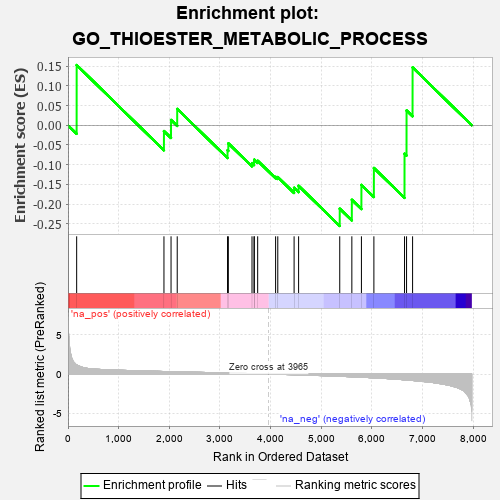
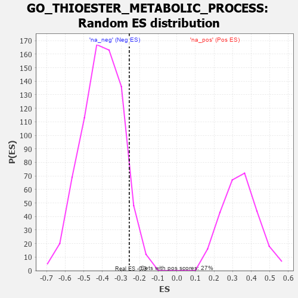

| | | Dataset | 7d |
| Phenotype | NoPhenotypeAvailable |
| Upregulated in class | na_neg |
| GeneSet | GO_THIOESTER_METABOLIC_PROCESS |
| Enrichment Score (ES) | -0.25562584 |
| Normalized Enrichment Score (NES) | -0.6337421 |
| Nominal p-value | 0.9249659 |
| FDR q-value | 0.9973789 |
| FWER p-Value | 1.0 |
Table: GSEA Results Summary

Fig 1: Enrichment plot: GO_THIOESTER_METABOLIC_PROCESS
Profile of the Running ES Score & Positions of GeneSet Members on the Rank Ordered List
| PROBE | GENE SYMBOL | GENE_TITLE | RANK IN GENE LIST | RANK METRIC SCORE | RUNNING ES | CORE ENRICHMENT | | 1 | DGAT1 | | | 171 | 1.146 | 0.1530 | No |
| 2 | OXSM | | | 1894 | 0.321 | -0.0147 | No |
| 3 | ACBD6 | | | 2034 | 0.300 | 0.0136 | No |
| 4 | TECR | | | 2156 | 0.284 | 0.0416 | No |
| 5 | ACLY | | | 3149 | 0.130 | -0.0633 | No |
| 6 | PPCS | | | 3165 | 0.127 | -0.0459 | No |
| 7 | ACSL4 | | | 3632 | 0.055 | -0.0961 | No |
| 8 | MCEE | | | 3673 | 0.048 | -0.0939 | No |
| 9 | ABCD1 | | | 3677 | 0.047 | -0.0871 | No |
| 10 | HACD2 | | | 3744 | 0.035 | -0.0901 | No |
| 11 | PDP2 | | | 4098 | -0.023 | -0.1310 | No |
| 12 | HMGCL | | | 4141 | -0.031 | -0.1315 | No |
| 13 | GCDH | | | 4463 | -0.087 | -0.1586 | No |
| 14 | AASS | | | 4552 | -0.106 | -0.1536 | No |
| 15 | ACOT8 | | | 5364 | -0.288 | -0.2118 | Yes |
| 16 | MPC1 | | | 5603 | -0.345 | -0.1891 | Yes |
| 17 | PMVK | | | 5792 | -0.403 | -0.1514 | Yes |
| 18 | PPT1 | | | 6038 | -0.485 | -0.1084 | Yes |
| 19 | ACSL5 | | | 6643 | -0.737 | -0.0721 | Yes |
| 20 | MPC2 | | | 6683 | -0.753 | 0.0377 | Yes |
| 21 | KYNU | | | 6802 | -0.816 | 0.1470 | Yes |
Table: GSEA details [plain text format]

Fig 2: GO_THIOESTER_METABOLIC_PROCESS: Random ES distribution
Gene set null distribution of ES for GO_THIOESTER_METABOLIC_PROCESS